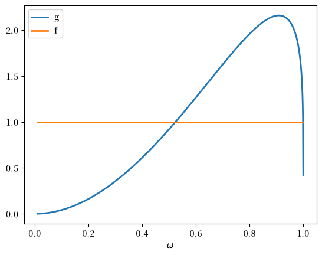
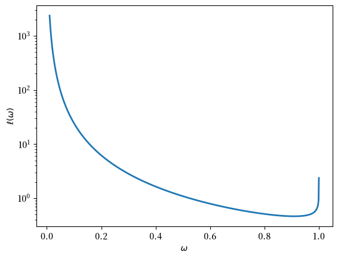
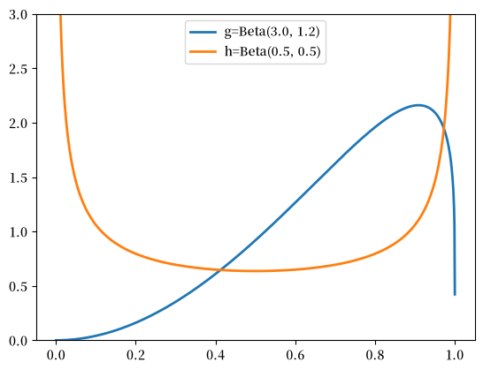
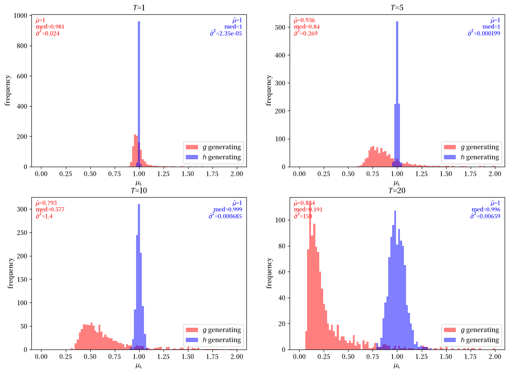
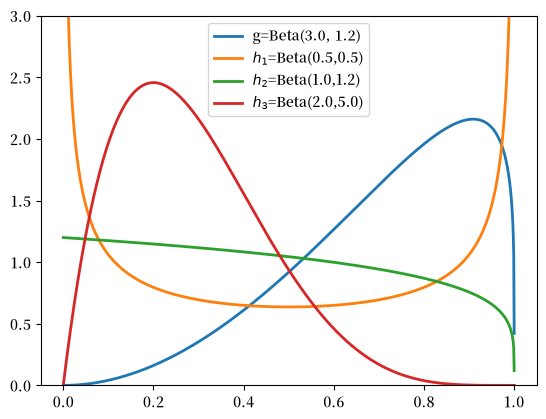
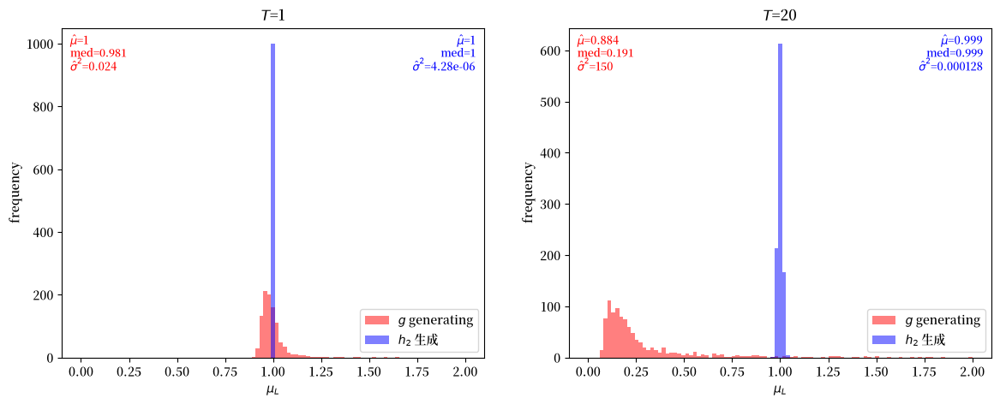
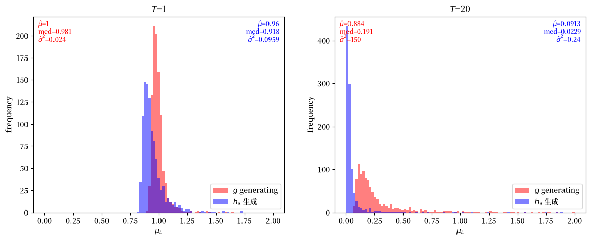

25. 似然比过程的均值#
GPU
本讲座是在配有GPU的机器上构建的——不过没有GPU也可以运行。
Google Colab 提供带GPU的免费套餐，使用方法如下：
点击右上角的”播放”图标
选择 Colab
将运行时环境设置为包含GPU
25.1. 概述#
在 似然比过程 中，我们描述了似然比过程的一个特殊性质，即尽管它几乎必然收敛于零，但对于所有 \(t \geq 0\)，其均值都等于1。
虽然在理论上（即在总体中）很容易验证这个特殊性质，但要通过计算机模拟来验证它却很具有挑战性，因为这需要应用大数定律来研究重复模拟的样本平均值。
为了应对这个挑战，本讲座使用__重要性抽样__来加速样本平均值向总体均值的收敛。
我们使用重要性抽样来估计累积似然比 \(L\left(\omega^t\right) = \prod_{i=1}^t \ell \left(\omega_i\right)\) 的均值。
除了Anaconda中包含的库外，本讲座还需要以下库：
!pip install jax
首先导入一些Python包。
import jax
import jax.numpy as jnp
import numpy as np
import matplotlib.pyplot as plt
FONTPATH = "fonts/SourceHanSerifSC-SemiBold.otf"
import matplotlib as mpl
mpl.font_manager.fontManager.addfont(FONTPATH)
plt.rcParams['font.family'] = ['Source Han Serif SC']
from jax.scipy.stats import beta
from typing import NamedTuple
from functools import partial
# 设置JAX使用64位浮点数
jax.config.update("jax_enable_x64", True)
25.2. 似然比的数学期望#
在 似然比过程 中，我们研究了似然比 \(\ell \left(\omega_t\right)\)
其中 \(f\) 和 \(g\) 是参数为 \(F_a\)、\(F_b\)、\(G_a\)、\(G_b\) 的Beta分布的密度函数。
假设独立同分布的随机变量 \(\omega_t \in \Omega\) 由 \(g\) 生成。
累积似然比 \(L \left(\omega^t\right)\) 为
我们的目标是很好地近似数学期望 \(E \left[ L\left(\omega^t\right) \right]\)。
在 似然比过程 中，我们证明了对所有 \(t\)，\(E \left[ L\left(\omega^t\right) \right]\) 等于1。
我们想要检验当用模拟的样本均值替代 \(E\) 时，这个结论的准确程度如何。
事实证明这比说起来要难，因为对于上述假设的Beta分布，当 \(t \rightarrow \infty\) 时，\(L\left(\omega^t\right)\) 具有非常偏斜的分布，且有很长的尾部。
这个特性使得用标准蒙特卡洛模拟方法来有效且准确地估计均值变得困难。
在本课中，我们将探讨标准蒙特卡洛方法为何会失效。
我们还将展示重要性抽样如何提供一种计算上更有效的方法来近似累积似然比的均值。
我们首先来看一下密度函数 f 和 g。
# 模型参数
class ImpSampleParams(NamedTuple):
F_a: float = 1.0 # f 的贝塔分布参数
F_b: float = 1.0
G_a: float = 3.0 # g 的贝塔分布参数
G_b: float = 1.2
params = ImpSampleParams()
def f(w):
return beta.pdf(w, params.F_a, params.F_b)
def g(w):
return beta.pdf(w, params.G_a, params.G_b)
w_range = np.linspace(1e-2, 1-1e-5, 1000)
plt.plot(w_range, g(w_range), lw=2, label='g')
plt.plot(w_range, f(w_range), lw=2, label='f')
plt.xlabel(r'$\omega$')
plt.legend()
plt.show()
findfont: Failed to find font weight normal, now using 600.
findfont: Failed to find font weight normal, now using 600.

图 25.1 贝塔密度函数 \(f\) 和 \(g\)#
似然比是 l(w)=f(w)/g(w)。
def l(w):
return f(w) / g(w)
plt.plot(w_range, l(w_range), lw=2)
plt.yscale('log')
plt.xlabel(r'$\omega$')
plt.ylabel(r'$\ell(\omega)$')
plt.show()

图 25.2 似然比 \(\ell(\omega)\)，对数坐标#
请注意纵轴使用了对数坐标：如果使用线性坐标，整条曲线会被左边缘的尖峰压平到接近零的位置。
图 25.1 显示，当 \(\omega \rightarrow 0\) 时，\(f \left(\omega\right)\) 保持不变，而 \(g \left(\omega\right) \rightarrow 0\)。
因此 图 25.2 中的似然比以 \(\omega^{-2}\) 的速率发散至无穷大。
当 \(\omega \rightarrow 1\) 时也会出现同样的情况，因为 \(G_b > 1\) 也会迫使 \(g\left(\omega\right) \rightarrow 0\)，这就解释了右边缘的上扬现象。
但那里的发散速度要慢得多——速率为 \(\left(1-\omega\right)^{-1/5}\)——正是 \(\omega = 0\) 附近的行为才导致了下文中的问题。
对 \(E \left[L\left(\omega^t\right)\right]\) 的蒙特卡洛近似会重复从 \(g\) 中抽取 \(t\) 个独立观测值组成的序列 \(\omega^t = \left(\omega_1, \ldots, \omega_t\right)\)，对每个这样的序列计算乘积 \(L\left(\omega^t\right) = \prod_{i=1}^t \ell \left(\omega_i\right)\)，然后对独立抽取的多个序列所得的乘积取平均值。
由于当 \(\omega \rightarrow 0\) 时 \(g(\omega) \rightarrow 0\)，这种模拟程序对样本空间 [0,1] 中的某些部分采样不足，而这些部分对于很好地近似 \(\ell \left(\omega\right)\) 的数学期望来说是需要经常访问的重要区域。
\(L\left(\omega^t\right)\) 中的每一个因子都以同样的方式发生了扭曲，因此这个问题会随着 \(t\) 的增大而不断累积加剧。
我们在下面通过数值方法说明这一点。
25.3. 重要性采样#
我们通过使用一种称为重要性采样的_分布变换_来解决这个问题。
在模拟过程中，我们不从 \(g\) 中抽取数据，而是使用另一个分布 \(h\) 来生成 \(\omega\) 的抽样。
这个想法是设计 \(h\) 使其对 \(\Omega\) 中那些 \(\ell \left(\omega_t\right)\) 取值较大但在 \(g\) 下密度较低的区域进行过采样。
用这种方式构造样本后，当我们计算似然比的经验均值时，必须用 \(g\) 和 \(h\) 的似然比对每个实现值进行加权。
通过这样做，我们恰当地考虑到了我们使用 \(h\) 而不是 \(g\) 来模拟数据的事实。
为了说明，假设我们对 \({E}\left[\ell\left(\omega\right)\right]\) 感兴趣。
我们可以简单地计算：
其中 \(\omega_i^g\) 表示 \(\omega_i\) 是从 \(g\) 中抽取的。
但是利用重要性抽样的见解，我们可以改为计算这个对象：
其中 \(\omega_i\) 现在是从重要性分布 \(h\) 中抽取的。
注意上述两个在总体上是完全相同的对象：
25.4. 选择抽样分布#
由于我们必须使用一个\(h\)，它在\(g\)赋予低概率的分布部分具有更大的质量，我们使用\(h=Beta(0.5, 0.5)\)作为我们的重要性分布。
这些图比较了\(g\)和\(h\)。
g_a, g_b = params.G_a, params.G_b
h_a, h_b = 0.5, 0.5
w_range = np.linspace(1e-5, 1-1e-5, 1000)
plt.plot(w_range, g(w_range),
lw=2, label=f'g=Beta({g_a}, {g_b})')
plt.plot(w_range, beta.pdf(w_range, 0.5, 0.5),
lw=2, label=f'h=Beta({h_a}, {h_b})')
plt.legend()
plt.ylim([0., 3.])
plt.show()

图 25.3 数据分布与重要性抽样分布#
25.5. 近似累积似然比#
我们现在研究如何使用重要性抽样来近似 \({E} \left[L\left(\omega^t\right)\right] = E \left[\prod_{i=1}^t \ell \left(\omega_i\right)\right]\)。
如上所述，我们的计划是从 \(q\) 中抽取序列 \(\omega^t\)，然后对似然比进行适当的重新加权。
分布的变换在总体上成立，这与单次抽取的情况完全一样：
这启发了以下估计量
其中 \(\omega_{n,i}^q\) 是从重要性分布 \(q\) 中抽取的第 \(n\) 条序列的第 \(i\) 个观测值。
这里 \(\frac{p\left(\omega_{n,i}^q\right)}{q\left(\omega_{n,i}^q\right)}\) 是我们分配给每个数据点 \(\omega_{n,i}^q\) 的权重。
下面我们准备一个 Python 函数，用于计算给定任何 beta 分布 \(p\)、\(q\) 的重要性抽样估计。
def estimate_single_path(key, p_a, p_b, q_a, q_b, T):
"""
Estimation for a single sample path.
"""
def loop_body(i, carry):
L, weight, key_state = carry
key_state, subkey = jax.random.split(key_state)
w = jax.random.beta(subkey, q_a, q_b)
# Keep draws off the boundary, where the log densities
# below produce the undefined form 0 * inf
w = jnp.clip(w, 1e-12, 1 - 1e-12)
# Compute likelihood ratio using f/g functions
likelihood_ratio = f(w) / g(w)
L = L * likelihood_ratio
# Importance sampling weight
p_w = beta.pdf(w, p_a, p_b)
q_w = beta.pdf(w, q_a, q_b)
weight = weight * (p_w / q_w)
return (L, weight, key_state)
# Use fori_loop for dynamic T values
final_L, final_weight, _ = jax.lax.fori_loop(
0, T, loop_body, (1.0, 1.0, key)
)
return final_L * final_weight
@partial(jax.jit, static_argnames=['N'])
def estimate(key, p_a, p_b, q_a, q_b, T=1, N=10000):
"""Estimation of a batch of sample paths."""
keys = jax.random.split(key, N)
# Vectorize over keys, holding the parameters fixed
estimates = jax.vmap(
estimate_single_path,
in_axes=(0, None, None, None, None, None)
)(keys, p_a, p_b, q_a, q_b, T)
return jnp.mean(estimates)
考虑 \(T=1\) 的情况，这相当于近似 \(E\left[\ell\left(\omega\right)\right]\)。
对于标准蒙特卡洛估计，我们可以设置 \(p=g\) 和 \(q=g\)。
estimate(jax.random.key(0), g_a, g_b, g_a, g_b,
T=1, N=10000)
Array(0.98300826, dtype=float64)
对于我们的重要性抽样估计，我们设定 \(q = h\)。
estimate(jax.random.key(1), g_a, g_b, h_a, h_b,
T=1, N=10000)
Array(1.00722995, dtype=float64)
显然，即使在 \(T=1\) 时，我们的重要性采样估计比蒙特卡洛估计更接近 \(1\)。
在计算更长序列的期望值 \(E\left[L\left(\omega^t\right)\right]\) 时，差异会更大。
当设置 \(T=10\) 时，我们发现蒙特卡洛方法严重低估了均值，而重要性采样仍然产生接近其理论值 1 的估计。
estimate(jax.random.key(2), g_a, g_b, g_a, g_b,
T=10, N=10000)
Array(0.60388316, dtype=float64)
estimate(jax.random.key(3), g_a, g_b, h_a, h_b,
T=10, N=10000)
Array(0.99185478, dtype=float64)
蒙特卡洛方法会低估是因为在分布 \(g\) 下，似然比 \(L(\omega^T) = \prod_{t=1}^T \frac{f(\omega_t)}{g(\omega_t)}\) 具有高度偏斜的分布。
从 \(g\) 中抽取的大多数样本产生较小的似然比，而真实均值需要偶尔出现的非常大的值，这些值很少被采样到。
在我们的情况下，由于当 \(\omega \to 0\) 时 \(g(\omega) \to 0\) 而 \(f(\omega)\) 保持不变，蒙特卡洛过程恰恰在似然比 \(\frac{f(\omega)}{g(\omega)}\) 最大的地方采样不足。
事实上情况比偏斜还要严重——蒙特卡洛估计量的方差是无穷大的。
要说明这一点，注意单个似然比的二阶矩为
这里 \(f\) 是均匀密度，而 \(g\left(\omega\right)\) 在 \(\omega \to 0\) 时以 \(\omega^{G_a - 1} = \omega^2\) 的速度趋于零。
因此被积函数在原点附近的行为类似于 \(\omega^{-2}\)，该积分是发散的。
所以 \(\ell\left(\omega\right)\) 没有有限的方差，并且由于各次抽取是独立的，对于任意 \(t\)，\(L\left(\omega^t\right)\) 同样没有有限的方差。
这正是标准蒙特卡洛方法在此失效的确切含义：其样本均值不满足任何中心极限定理，因此不具备通常的 \(\sqrt{N}\) 收敛保证。
随着 \(T\) 的增加，这个问题会不断恶化，使标准蒙特卡洛方法变得越来越不可靠。
使用 \(q = h\) 的重要性采样通过更均匀地从对 \(f\) 和 \(g\) 都重要的区域采样来解决这个问题。
25.6. 样本均值的分布#
接下来我们研究蒙特卡洛和重要性采样方法的偏差和效率。
下面的代码将估计重复N_simu次，这样我们就可以查看每种方法产生的估计值的分布。
@partial(jax.jit, static_argnames=['N_simu', 'N_samples'])
def simulate(key, p_a, p_b, q_a, q_b, N_simu, T=1,
N_samples=10000):
"""Repeat the estimate N_simu times, drawing from q."""
keys = jax.random.split(key, N_simu)
return jax.vmap(
lambda k: estimate(k, p_a, p_b, q_a, q_b, T,
N_samples)
)(keys)
设置 \(q = p\) 可以恢复标准蒙特卡洛方法，因为这样每个重要性权重都恒等于1。
再次，我们首先通过设置T=1来估计\({E} \left[\ell\left(\omega\right)\right]\)。
我们对每种方法进行1000次模拟。
N_simu = 1000
μ_L_g = simulate(jax.random.key(4), g_a, g_b,
g_a, g_b, N_simu)
μ_L_h = simulate(jax.random.key(5), g_a, g_b,
h_a, h_b, N_simu)
# 标准蒙特卡洛（均值和方差）
jnp.mean(μ_L_g), jnp.var(μ_L_g)
(Array(0.99558545, dtype=float64), Array(0.00448641, dtype=float64))
# 重要性采样（均值和方差）
jnp.mean(μ_L_h), jnp.var(μ_L_h)
(Array(0.99985196, dtype=float64), Array(2.46227759e-05, dtype=float64))
虽然两种方法都倾向于给出接近1的\({E} \left[\ell\left(\omega\right)\right]\)均值估计，但重要性抽样估计的方差更小。
接下来，我们展示\(\hat{E} \left[L\left(\omega^t\right)\right]\)在\(T=1, 5, 10, 20\)这些情况下的估计值分布。
def simulate_multiple_T(key, p_a, p_b, q_a, q_b, T_values,
N_simu, N_samples=10000):
"""Run simulate once per T, returning a dict keyed by T."""
keys = jax.random.split(key, len(T_values))
return {T: simulate(keys[i], p_a, p_b, q_a, q_b,
N_simu, T, N_samples)
for i, T in enumerate(T_values)}
下面这个函数绘制我们用来比较两种方法的直方图。
def plot_estimates(T_values, mc, imp, imp_label, n_rows=1):
"""Compare Monte Carlo and importance sampling estimates."""
n_cols = len(T_values) // n_rows
fig, axs = plt.subplots(n_rows, n_cols,
figsize=(14, 5 * n_rows))
μ_range = np.linspace(0, 2, 100)
for ax, T in zip(np.ravel(axs), T_values):
μ_L_g, μ_L_h = np.asarray(mc[T]), np.asarray(imp[T])
ax.set_xlabel('$μ_L$')
ax.set_ylabel('frequency')
ax.set_title(f'$T$={T}')
ax.hist(μ_L_g, bins=μ_range,
color='r', alpha=0.5, label='$g$ generating')
ax.hist(μ_L_h, bins=μ_range,
color='b', alpha=0.5, label=imp_label)
ax.legend(loc=4)
# Summarize each distribution in an upper corner
for μ_L, color, x, ha in ((μ_L_g, 'r', 0.02, 'left'),
(μ_L_h, 'b', 0.98, 'right')):
ax.text(x, 0.98, transform=ax.transAxes, ha=ha,
va='top', color=color, fontsize=9,
s=r'$\hat{μ}$=' + f'{np.mean(μ_L):.3g}' +
'\n' + 'med=' + f'{np.median(μ_L):.3g}' +
'\n' + r'$\hat{σ}^2$=' + f'{np.var(μ_L):.3g}')
plt.show()
蒙特卡洛估计不依赖于重要性分布，因此我们只计算一次，并在下面的每个图中重复使用它们。
T_values = [1, 5, 10, 20]
mc = simulate_multiple_T(jax.random.key(6), g_a, g_b,
g_a, g_b, T_values, N_simu)
imp_h1 = simulate_multiple_T(jax.random.key(7), g_a, g_b,
h_a, h_b, T_values, N_simu)
plot_estimates(T_values, mc, imp_h1, '$h$ generating',
n_rows=2)
findfont: Failed to find font weight normal, now using 600.
findfont: Failed to find font weight normal, now using 600.
findfont: Failed to find font weight normal, now using 600.
findfont: Failed to find font weight normal, now using 600.

图 25.4 Monte Carlo and importance sampling estimates#
上述模拟练习表明，对于每一个\(T\)，重要性抽样估计都保持在\(1\)附近，而标准蒙特卡洛估计的分布则随着\(T\)的增加而持续向左偏移。
有必要仔细分析一下这里究竟出了什么问题。
蒙特卡洛估计量在总体意义上是无偏的——对于每个\(T\)，其期望恰好为\(1\)。
随着\(T\)的增大而恶化的是其抽样分布的形状：几乎所有的概率质量都向零坍缩，而期望值则由罕见的极端离群值来维持。
这就是为什么每个面板都同时报告了中位数。
中位数随\(T\)稳步下降，而报告的均值\(\hat{μ}\)则是一个不可靠的统计量——回想一下，其潜在方差是无穷的，因此每个面板中打印的\(\hat{σ}^2\)所估计的量根本不存在，并且换一个不同的随机种子就可能使\(\hat{μ}\)发生很大的变化。
重要性抽样恰恰弥补了这一缺陷。
25.7. 选择抽样分布#
上面，我们任意选择 \(h = Beta(0.5,0.5)\) 作为重要性分布。
是否存在最优的重要性分布？
在我们这个特定的情形中，由于我们事先知道 \(E \left[ L\left(\omega^t\right) \right] = 1\)，我们可以利用这个信息。
因此，假设我们简单地使用 \(h = f\)。
在估计似然比的均值时（T=1），我们得到：
μ_L_f = simulate(jax.random.key(8), g_a, g_b,
params.F_a, params.F_b, N_simu)
# 重要性抽样（均值和方差）
jnp.mean(μ_L_f), jnp.var(μ_L_f)
(Array(1., dtype=float64), Array(1.23259516e-30, dtype=float64))
我们也可以使用其他分布作为我们的重要性分布。
下面我们选择其中几个，并比较它们的抽样特性。
a_list = [0.5, 1., 2.]
b_list = [0.5, 1.2, 5.]
w_range = np.linspace(1e-5, 1-1e-5, 1000)
plt.plot(w_range, g(w_range),
lw=2, label=f'g=Beta({g_a}, {g_b})')
plt.plot(w_range, beta.pdf(w_range, a_list[0], b_list[0]),
lw=2, label=f'$h_1$=Beta({a_list[0]},{b_list[0]})')
plt.plot(w_range, beta.pdf(w_range, a_list[1], b_list[1]),
lw=2, label=f'$h_2$=Beta({a_list[1]},{b_list[1]})')
plt.plot(w_range, beta.pdf(w_range, a_list[2], b_list[2]),
lw=2, label=f'$h_3$=Beta({a_list[2]},{b_list[2]})')
plt.legend()
plt.ylim([0., 3.])
plt.show()

图 25.5 重要性抽样分布比较#
我们再考虑另外两个分布。
提醒一下，\(h_1\) 是我们上面使用的原始 \(Beta(0.5,0.5)\) 分布。
\(h_2\) 是 \(Beta(1,1.2)\) 分布。
注意 \(h_2\) 在 \(\omega\) 取较大值时与 \(g\) 的形状相似，但在较小值时具有更多质量。
我们的直觉是，\(h_2\) 应该是一个很好的重要性抽样分布。
\(h_3\) 是 \(Beta(2,5)\) 分布。
注意 \(h_3\) 在接近 0 和接近 1 的取值处几乎没有质量。
我们的直觉是，\(h_3\) 将会是一个较差的重要性抽样分布。
上面的方差计算能让我们把这些直觉表述得更精确。
从 \(h\) 中抽样并重新加权，会为每个观测值赋予 \(\ell\left(\omega\right) g\left(\omega\right) / h\left(\omega\right) = f\left(\omega\right) / h\left(\omega\right)\) 的值，因此该估计量恰好在以下条件下具有有限方差：
对于 \(h_1\) 和 \(h_2\)，该积分是收敛的。
对于 \(h_3\)，该积分在两个端点都发散，因为 \(h_3\) 在原点附近以 \(\omega\) 的速率趋于零，而在 1 附近以 \(\left(1-\omega\right)^4\) 的速率趋于零。
因此，使用 \(h_3\) 进行重要性抽样具有无限方差，这与标准蒙特卡洛方法一样——这正是它成为较差选择的原因。
我们首先模拟并绘制使用 \(h_2\) 作为重要性抽样分布时，\(\hat{E} \left[L\left(\omega^t\right)\right]\) 的估计分布。
T_values_h2 = [1, 20]
imp_h2 = simulate_multiple_T(jax.random.key(9), g_a, g_b,
a_list[1], b_list[1],
T_values_h2, N_simu)
plot_estimates(T_values_h2, mc, imp_h2, '$h_2$ 生成')

图 25.6 使用重要性分布 \(h_2\) 的估计#
我们的模拟结果表明，\(h_2\) 确实是我们问题的一个相当好的重要性抽样分布。
即使在 \(T=20\) 时，均值也非常接近 \(1\)，并且方差很小。
T_values_h3 = [1, 20]
imp_h3 = simulate_multiple_T(jax.random.key(10), g_a, g_b,
a_list[2], b_list[2],
T_values_h3, N_simu)
plot_estimates(T_values_h3, mc, imp_h3, '$h_3$ 生成')

图 25.7 使用重要性分布 \(h_3\) 的估计#
然而，\(h_3\) 显然是我们问题的一个较差的重要性抽样分布，在 \(T = 20\) 时其均值估计值与 \(1\) 相差甚远。
请注意，即使在 \(T = 1\) 时，使用重要性抽样得到的均值估计也比仅使用 \(g\) 抽样时更有偏差。
因此，我们的模拟结果表明，对于我们的问题，直接在 \(g\) 下使用蒙特卡洛近似，会比使用 \(h_3\) 作为重要性抽样分布效果更好。